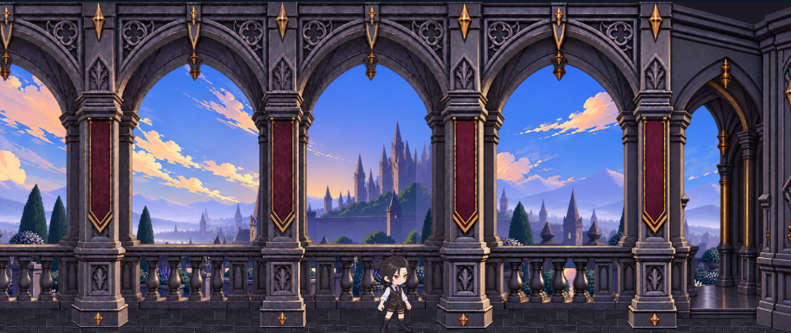

太陽盤 調整ワークベンチ
左で見ながら、右で色と配置を調整。元画像は変更しません。
プレビュー
横画面 844 × 390色だけ切替
参考素材・操作の補足



色相環はクリック・ドラッグ、または矢印キーで調整。陰影を下げると平らな塗り、光沢を上げると明るい反射になります。色・質感は盤と針に共通適用します。
配置は844×390基準。大きさは画像全体の直径、X/Yは中心、角度は度、面の濃さは％。数値入力はEnterまたは欄を離れると反映します。枠の濃さは変わりません。
試作03の細い縁や面の一致は仕上げ対象。白／黄土の区分は元の色の自動マスクなので境界に混ざりが残る場合があります。質感は既存の陰影を使う2D表現です。
色・質感
色調整は試作03専用です。素材の版を試作03へ戻してください。